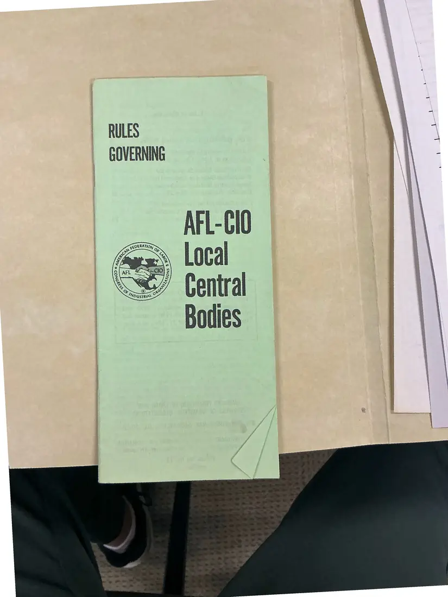
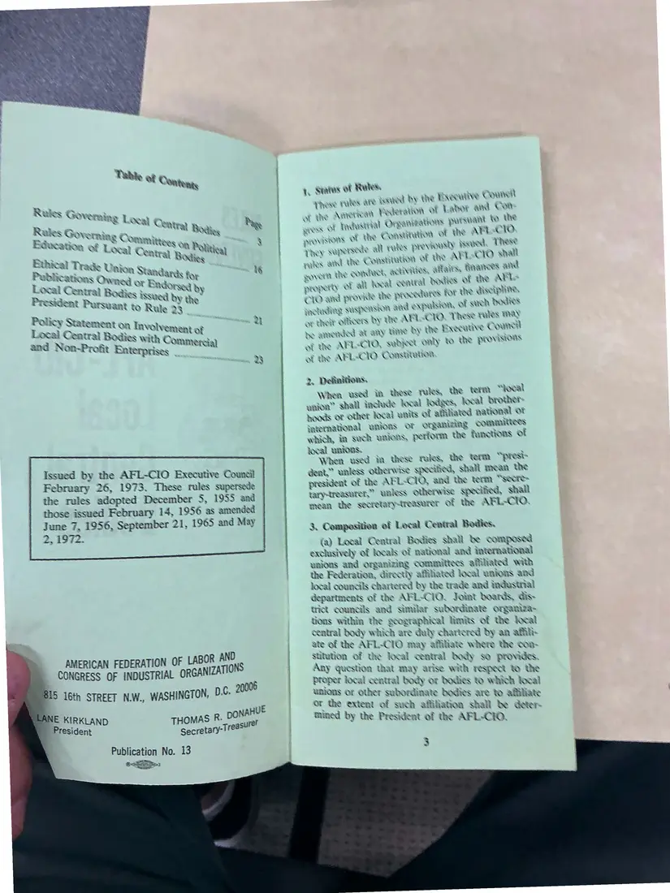
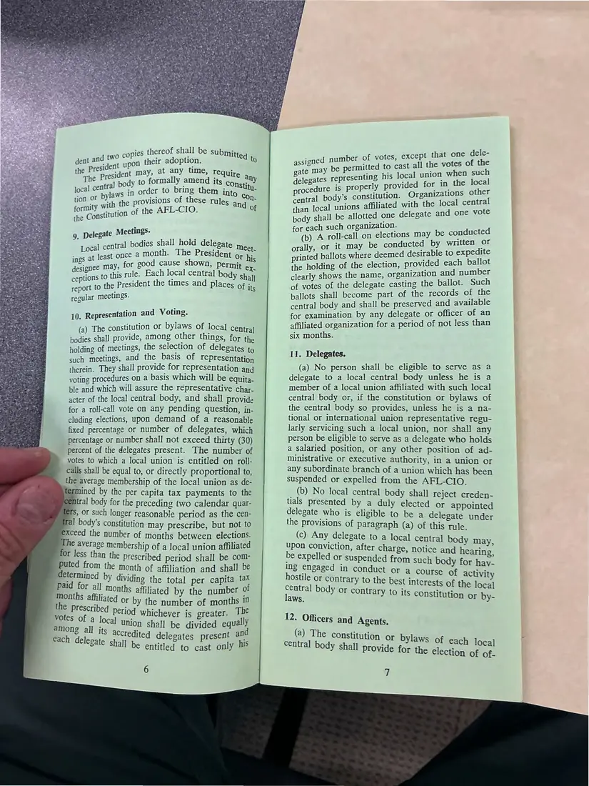
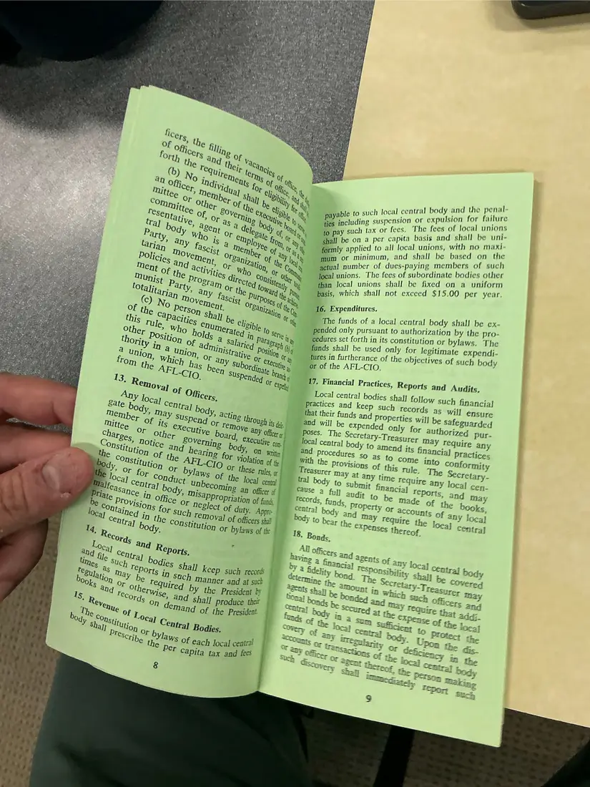
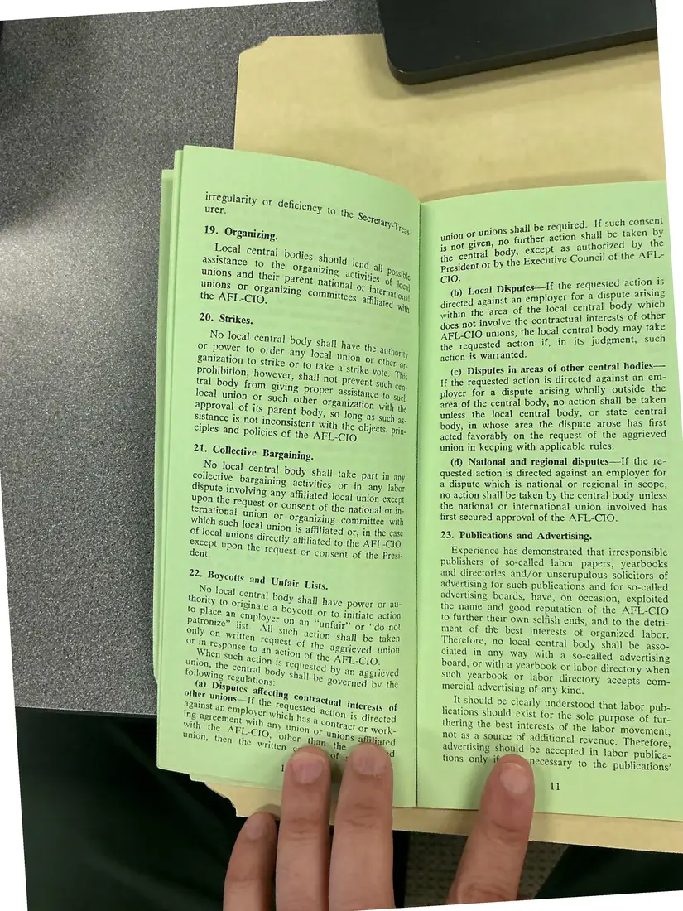
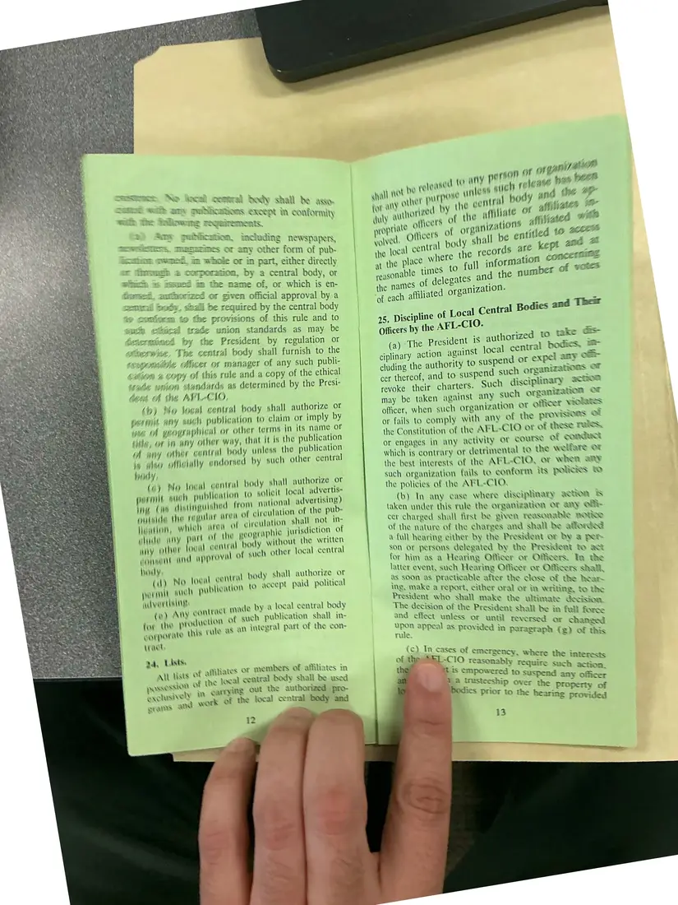
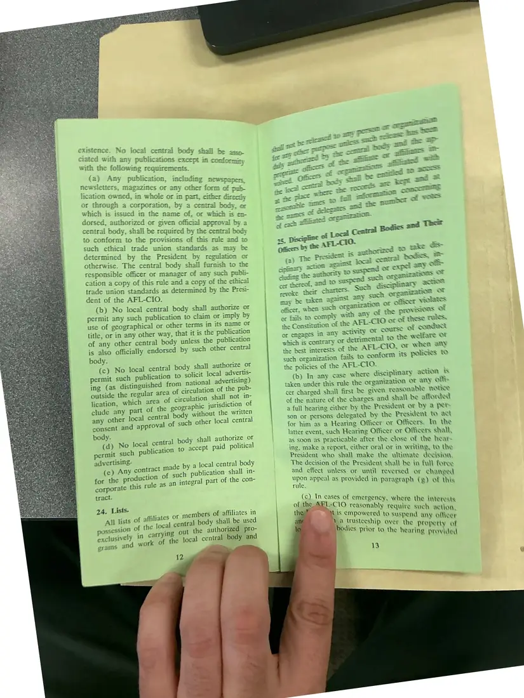

Pamphlet, 6 pages, plus 1 additional copy
Rules Governing AFL-CIO Local Central Bodies (pamphlet)
Issued February 26, 1973
AFL-CIO Publication No. 13, the national rules for local central bodies (labor councils), photographed as a booklet from the cover through pages 12–13. The rules cover charters, delegates, officers, strikes, boycotts, and labor publications. The Labor Coalition used these rules when it rewrote its constitution to affiliate with the AFL-CIO.
This 1973 edition was filed with the Coalition's 1993–94 affiliation papers. Photographed back-to-front; shown here in reading order. Pages 12–13 were photographed twice.
Download or cite this itemPages


(open zoom view)Read the page text (machine-read, many errors)
This text was generated automatically from the photograph and has not been corrected. The image is the authoritative record.
se eARETOOAE RULES AERO TORTS GOVERNING


(open zoom view)Read the page text (machine-read, many errors)
This text was generated automatically from the photograph and has not been corrected. The image is the authoritative record.
4. Statas of Rakes, oe Pave Hates ave HHT ny the Executive Counenl eae Amotioan Pederationt 01 Labor amd ¢ on eso yas PPR w ihe Br me seers Of Yaduatdial OPN We) a re Conseination of Ue ABL:ClO MRE Local Contras Bodigg ~% Ti ag Qog : RE COmemity Education Or Loxwal Qe trad tal : aegeene wll VARS PIC\ wusty taued ~~ Ethical Trade Union Stan kc: “6 rakes att the COassiaskon Of ~ ie : ; sdlcor Publications Qums 3 ate Aedards for . OVER BRS COMATY, ATEN Ries, AAAI rans ~ Local Central Boek ¥ Badored dy propre ty Of all fowal central Dates ot om President Pursaaz Fr ued by the: CLO ave PROV UE PLICTTLES FOE the discipline Rite ee : HTT DAHER aad expabbion, of sueh TRAHS Policy Statement on Tnvolveme =e = P| ot Dredt OMS by The AB.-CYO: TRE runs sa Local Coatral Bodies with Oo hs : me amronded at any Lime Dy Te Bxceutive Counce and Non-Profit Eerie at te AFL-CIO, wader ovly % Cho PLOVINIORS 2 es 3 of de AFL-CIO Consutation, 2. Dehnitions. When used ia Uese URS, the term “local gaion” Shall include local: lodges, jooal brother hoods of other Rocal waits of afitated national or yatornational BAIOAS of organizing COMMITTESS which, in such unions, perform the functions Of local URIORS. f When used ja these Tuks, the tem “pres= Issued by the AFL-CIO Executive Counail dent,” unless otherwise specified, shall mead the February 26, 1973. These rules supersede the rules adopted December 5, 1955 and president of the AFL-C1O, and the term “sccre- tarptreasarer,” unless otherwise special, shall mean the secretary-treagsurer of the AFL-CIO, those issued February 14, 1956 as amended June 7, 1956, September 21, 1965 and May 2, 1972. 3, Compasition ef Local Central Bodies. (a) Local Central Bodies shall be composed exclusively of locals of national and international unions and organizing committees affiliated with the Federation, directly affifiated local unions and local councils chartered by the trade and industnal departments of the APL~CIQ, Joint boards, dis- trict councils and Similar subordinate omaniza- tions within the geographkal limits of the local central body which are duly chartered dy an affii- ate of the AFL-CIO may afiiate where the ooa- Stitution of the local central dady so provides, Any question Ubat may arise with respect % the proper local central body or Dodies to which booal unions or other subordinate bodies are to affiliate Or the extent of such afiiliation shall be deter mined by the President of the AFL-CIO. AMERICAN FEDERATION OF LABOR AND CONGRESS OF INDUSTRIAL ORGANIZATIONS p.c, 20006 sac ei eS eS DOIILE 4E KIRKLAND ' President Publication No. 13


(open zoom view)Read the page text (machine-read, mostly readable)
This text was generated automatically from the photograph and has not been corrected. The image is the authoritative record.
thereof shall be sub upon their adoption. 4 may, at oa time, Tequire any body to formally amend its co)... ntral bo Ger te bee intaee ith the provis estan stitution of the AFL-CIO. of Mitteg Q5 Delegate Meetings. i ies shall hold dele 1 central bodies s egate mee Se aiiieact once a month. The President o, his hown i “nee may, for good cause s 2 Penne ee to this rule. Each local central body a report to the President the times and places Of its regular meetings. 10. Representation and Voting. (a) The constitution or bylaws of local Central bodies shall provide, among other things, for the holding of meetings, the selection of delegates to such meetings, and the basis of representation therein. They shall provide for representation and voting procedures on a basis which will be equita- ble and which will assure the representative char- acter of the local central body, and shall provide for a roll-call vote on any pending question, in- cluding elections, upon demand of a reasonable fixed percentage or number of delegates, which percentage or number shall not exceed thirty (30) percent of the delegates present. The number of votes to which a local union is entitled on roll- calls shall be equal to, or directly proportional to, the average membership of the local union as de- ermined by the per capita tax payments to the tral body for the preceding two calendar quar- fers, or such longer reasonable period as the cen- Hal body’s constitution may prescribe, but not to exceed the number of months between elections. le average membership of a local union affiliated Mor less than the prescribed period shall be com- ae ue eeu of affiliation and ale Bd for all us i dng the total per capita Fe Be hs Gd ee by the ge 3 the prescribed Benen see of mon oe votes of a local uni RICE EE 18 Deas ally among all its a Mion shall be divided equ 4 Cctedited delegates present am each delegate shall b . y his © entitled to cast only mber of votes, except that one dele- itted to cast all the votes of the ting his local union when such ly provided for in the peal ituti izations other 1 body’s constitution. Organiza Sait Se affiliated with the local central body shall be allotted one delegate and one vote ach such organization. a A roll-call on elections may be conducted or it may be conducted by written OF oe ballots ee deemed desirable to expedite the holding of the election, provided each ballot clearly shows the name, organization and number of votes of the delegate casting the ballot. Such ballots shall become part of the records of the central body and shall be preserved and available for examination by any delegate or officer of an affiliated organization for a period of not less than six months. delegates represen procedure 1s Proper 11. Delegates. (a) No person shall be eligible to serve as a delegate to a local central body unless he is a member of a local union affiliated with such local central body or, if the constitution or bylaws of the central body so provides, unless he is a na- tional or international union representative regu- larly servicing such a local union, nor shall any person be eligible to serve as a delegate who holds a salaried position, or any other position of ad- ministrative or executive authority, in a union or any subordinate branch of a union which has been suspended or expelled from the AFL-CIO. (b) No local central body shall reject creden- tials presented by a duly elected or appointed delegate who is eligible to be a delegate under the provisions of paragraph (a) of this rule. (c) Any delegate to a local central body may upon conviction, after charge, notice and hearing, be expelled Or suspended from such body for hav- Ing engaged in conduct or a course of activity to the best interests of the local ntrary to its constitution or by- 12. Officers and Agents. (a) The constitution or bylaw central body shall provide for te of each local € election of of-


(open zoom view)Read the page text (machine-read, contains errors)
This text was generated automatically from the photograph and has not been corrected. The image is the authoritative record.
dy and the penal- such local central body anc anal ayable to such local ¢ ape sgt lp tle Bie Be Juding suspension or expul lure See ch tay x fees, The fees of local unions ee “gee capita basis and shall be uni- oe, Saiieds to all local unions, with no maxi- | hed By itn imnttea and shall be based on the eet num ; 1 *s-paying members of such actual number of dues-paying 1 ep lo ions. The fees of subordinate bodies other Jocal unions. The fee: ‘ ase, than local unions shall be fixed on a uniform basis, which shall not exceed $15.00 per year. 1G Expenditures, The funds of a local central body shall be ex- pended only pursuant to authorization by the pro- cedures set forth in its constitution or bylaws, The funds shall be used only for legitimate expendi- tures in furtherance of the objectives of such body or of the AFL-CIO. D7. Financial Practices, Reports and Audits, Local central bodies shal] follow such financia] ; records as wij] ensure that their funds ies will be Safeguarded for authorized


(open zoom view)Read the page text (machine-read, contains errors)
This text was generated automatically from the photograph and has not been corrected. The image is the authoritative record.
“ arr Nye Te i) KaNee bs ie YY ora + 42 4 y Wak , CET eet Ae Tre 19, Organizing, 3 ies Central bodies Should } ance to the OT ganizing ae, Possipy Ons and their Parent nations) eS of loc A uODS Or organizing comment, OF int tion the AFL-CIO, mms aha ah 20. Strikes, No local central b al Body shall have or Power to order any local union sa Gone ganization to strike or to take a as 21. Collective Bargaining. No Jocal central €ctive bargainin pute Involving an body shall take part in any 8 activities or jn any labor y affiliated local unio upon the re eine Behe quest or consent of the national or in- c union Or or i7y ‘ ; which such | &anizing committee with L ocal union is affiliat 225 Boycotts and Unfair Lists, aoe loca] central body shall h ¥ tO originate 4 boycott or employer on an “ All such acti request Selior ee of th h action entra] ave power or all- tO initiate action unfair” or “do not On shall be taken © aggrieved union union, the G follow; If such consent Sa o further action shall be aed Be body except as authorized by 165 Local Disputes—If the Requested nace ispute arising e : employer for a dispu : tenes ee a ce local central body which wit j tual interests of other involve the contrac : CGO unions, the local central body sap een ae requested action if, in its judgment, action is warranted. (c) Disputes in areas of other central be If the requested action is directed eLiaeee an ae ployer for a dispute arising wholly ou = fee area of the central body, no action shall be ta : unless the local central body, or state centra body, in whose area the dispute arose has first acted favorably on the request of the aggrieved union in keeping with applicable rules. (d) National and regional disputes—If the re- quested action is directed against an employer for a dispute which is national or regional in scope, no action shall be taken by the central body unless the national or international union involved has first secured approval of the AFL-CIO. 23. Publications and Advertising. Experience has demonstrated that irresponsible publishers of so-called labor papers, yearbooks and directories and/or unscrupulous solicitors of advertising for such publications and for so-called advertising boards, have, on Occasion, exploited the name and good reputation of the AFL-CIO to further their own selfish ends, and to the detri- ment of the best interests of organized labor. Therefore, no local central body shall be asso- ciated in any way with a so-called advertising board, or with a yearbook or labor directory when such yearbook or labor directory accepts com- mercial advertising of any kind. _ It should be clearly understood that labor pub- lications should exist for the sole purpose of fur- thering the best interests of the labor movement not as a source of additional revenue. Therefore, advertising should be accepted in labor publica. tions only ifeiml necessary to the publications’


(open zoom view)Read the page text (machine-read, contains errors)
This text was generated automatically from the photograph and has not been corrected. The image is the authoritative record.
nis oy . body shall be AWOe SRS CKO in conformity meluding newspaper, a any other form of pub- em qemai, me whole of 3 i i . whole or im part, either directly a inex 2 SOTpOrEnOn, by a central body, or = che mame of, or which is en- autnorized or given official approval by a ety. Saal be required by the central body | ie the provisions of this rule and to ic union standards as may be ; ae DY the President by regulation or cerwiat, The central body shall furnish to the tosponie Siwex ox svanagers of any such publi- hie, 2 roy of this rule and a copy of the ethical veion sandards as determined by the Presi- the AFL-CIO, 4») Mo local cenwal body shall authorize or permit any such publication to claim or imply by al or other terms in its name or ver way, that it is the publication ess the publication h other central 1 A wie of yeousaphic title, or in any onl A any other central body unl io alow offieiatly endorsed by suc hady, (eo) Ne logal gente permit such publication ing (8 distinguished from 1 outside the regular ared af elf Heaton, whieh area of circulation sh alide any par at the geographic jurisdiction ot any otter local eantral body without the written donaent and approval of such other local central iidly : al) No lowal central body shall authorize or yer iit auel publication te accept paid political Aver tints (o) ANY far the pr earporaw this act al body shall authorize or to solielt local advertis- ational advertising) culation of the pub- lation shall not ine by a local central body h publication shall in- \tegral part of the con- COHEALL nade xiuetion of suc pule as abu da, Lists, affiliates Of members of affiliates in } yiats wt se . the fecal central body shall be used PISsesHan af “ ie xochusively % carrying Out the authorized pro- srk of the local central body and SEAS and we 12 , ac of delegates ane jated organization. authorized to al central bodies, expel any O& (a) The President is ciplinary action against loc cluding the authority to suspend or ef any cer thereof, and to suspend such organizanoas OF revoke their charters. Such disciplinary 22" may be taken against any such organizaron Of officer, when such organization oF officer Vilas or fails to comply with any af the provisions of the Constitution of the AFL-CIO or of these TUES. or engages in any activity OF COUESS of conduct which is contrary or detrimental to the welfare Or the best interests of the AFL-CIO, or when any such organization fails to conform ity poles & the policies of the AFL-CIO, (b) In any case where disciplinary action BS taken under this rule the organization or any oft- cer charged shall first be given reasonadlc norke ot the nature of the charges and shall be afforded eae hearing cither by the President or by a pee- ; os Or persons delegated by the President to act se him as a Hearing Officer or Officers, In the aus event, such Hearing Officer or Oficers shall, . SNR as practicable after the clase of the be: : P g, make a report, either oral or in writi =e ye resident who shall make the ulti yp The decision of the Presid a Saab Ge Nee 5 8 esident she e in full fi and effect unless or until re = — pear se reversed or changed UPON appre: 1 as < appeal as provided ji ‘ rule. Provided in paragraph (g) of this (c)} In cases ases of emergency gow mergency, wher i of ths eT -C 1O reasonably ae east gS i age , : r such actiorg : Jjeteainen to suspend any officer powere Goce tresteeship over the property ves ICS pric : een bodies prior to the hearine provided
Additional copies
The same document was photographed more than once. These copies may carry different handwriting, stamps, or paper.


(open zoom view)Read the page text (machine-read, contains errors)
This text was generated automatically from the photograph and has not been corrected. The image is the authoritative record.
existence, No local central body ciated with any publications excep with the following requirements. m conformity ete (a) Any publication, including newspapen , newsletters, magazines or any other form of ob: lication owned, in whole or in part, either daxeetiy or through a corporation, by a central body, or which is issued in the name of, or which is en- dorsed, authorized or given official approval by a central body, shali be required by the central body to conform to the provisions of this mule and to such ethical trade union standards as may be determined by the President by regulation or otherwise. The central body shall furnish to the responsible officer or manager of any such publi- cation a copy of this rule and a copy of the ethica trade union standards as determined by the Presi- dent of the AFL-CIO. (b) No local central body shall authorize or permit any such publication to claim or imply by use of geographical or other terms in its name OF title, or in any other way, that it is the publication of any other central body unless the publication is also officially endorsed by such other central body. (c) No local central permit such eine ae ing (as distinguished from ne ion: Side the regular area of circulation of the pub- lication, which area of circulation shat UP clude any part of the geographi ae ee any other local central body wit ee ae consent and approval of such other loca body shall authorize OT to solicit local advertis- advertising } body. , shall authorize or local central body sna 30 ae a aaa publication to accept paid political advertising- ade by a local central body press Ane rae ach publication shall in- roduction ¢ : sesisbee this rule as an integral part of the con tract. 24, Lists. «ts of affiliates OF members of affiliates in - focal central body shall be used i » authorized pro- i carrying out the au oad of ee local central body and 12 y a Ince pest “ ‘ 2 ; ghee OE. os, ane pe po jmicus a = wr ae * awe go ee ——— a ye Fe tn cs ae: ee 7: a jess anc in = ee ~ cana Oe fhe nat © pl prapnizanOn- ween god Thee ne iad Oe ee = FL-c10. Officers by the © : aw ae & | precademt iS sothorired © *. we (a) “The Pee cal vara bodes, ™ —_ scant a S BORON liad Se TAMiZANOR evoke thea charters. SBN may be taken against any = ~ Sacer WIOtAReS opus anc organizanion ee CF officer, when cae oe any of the PTOVISIOAS OF tt. ty commy Witt pce. sae x ye So or fails to COMP AFL-CIO or of these TUBS, the Constitution of the 2 : sae <u or engages in any activity or COUTSS af coRaues So J J ikaw ot which is contrary of detrimental to the as the best interests of the AFL-CIO, ot wh . baci such organization fails to conform its polices & the policies of the AFL-C TO. ‘inion (b) In any case where disciplinary actron ks taken under this rule the organization Of any ont cer charged shall first be given reasonable ROUCo of the nature of the charges and shall be afforded a full hearing either by the President of dy a Pet son or persons delegated by the President to act for him as a Hearing Officer or Officers. In the latter event, such Hearing Officer or Officers shall, as soon as practicable after the close of the hear= ing, make a report, either oral or in writing, to the President who shall make the ultimate decision, The decision of the President shall be in full foree and effect unless or until reversed or changed pits appeal as provided in paragraph (g) of thix rule. scseugamanes i emereeney, wher the ier | ‘hell i. noua = SSA such vetlon, n va Sueen ip = see any officer bodies prior ia the Rael aisedhs, ot ¢ hearing provided
See something wrong, or recognize a person or event? Send a correction. If you hold rights in this item or think it should not be public, write to the same address.